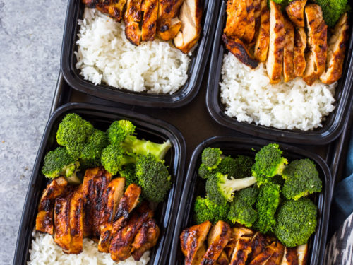

They don't call this The Classic for nothing! This recipe is a staple of any dieatry regime,
and quite simple to recreate. Let me show you how!
Marinate yo chicken - go crazy. Let it soak up da juices.
Personally: Soy Sauce, Salt, Pepper, Meat Seasoning.
Chuck the chicken in the oven, blast the heat, like 20-25mins.
Wash your damn rice. Cook it however you cook rice.
Wash and cut up your broccoli. Steam 'till aldente.
Serve into 5 tupperwares equally, refrigerate.